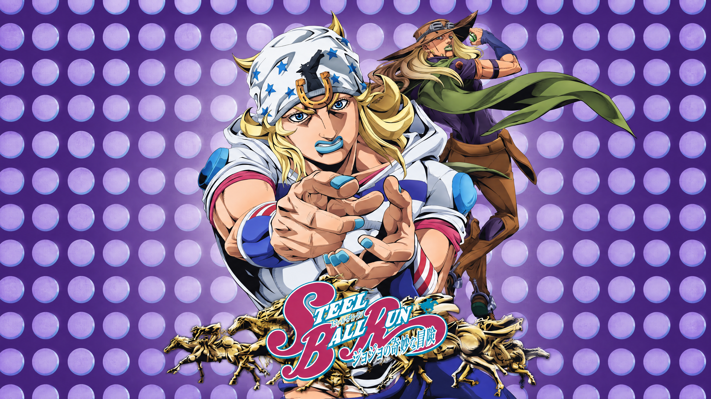
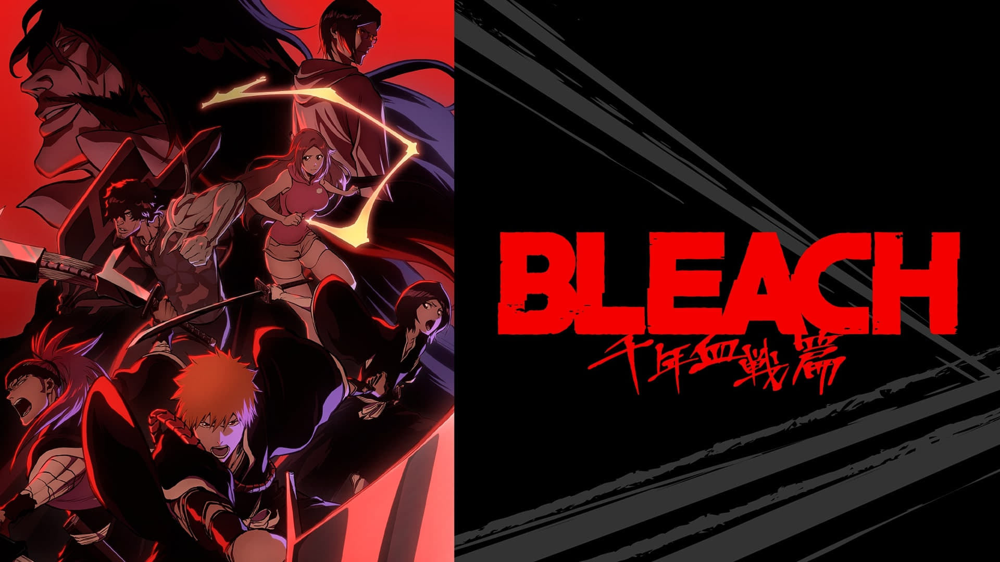

Studio Trigger's return to the Night City has officially started streaming on Netflix.

Netflix's adaptation of the seventh part of the franchise is officially rolling out.
The titan of Japanese manga, first mangaka to recieve the nation's prestigious Order of Culture, passed away in Tokyo.

The Bleach Anime has officially concluded its 22-year run with the final episode of The Thousand-Year Blood War acr.
A new partnership launched 5 collaborative projects blending U.S. comic icons with Japanese manga formats.
Maomao's return is among Crunchyroll's current lineup alongside new theme song releases.